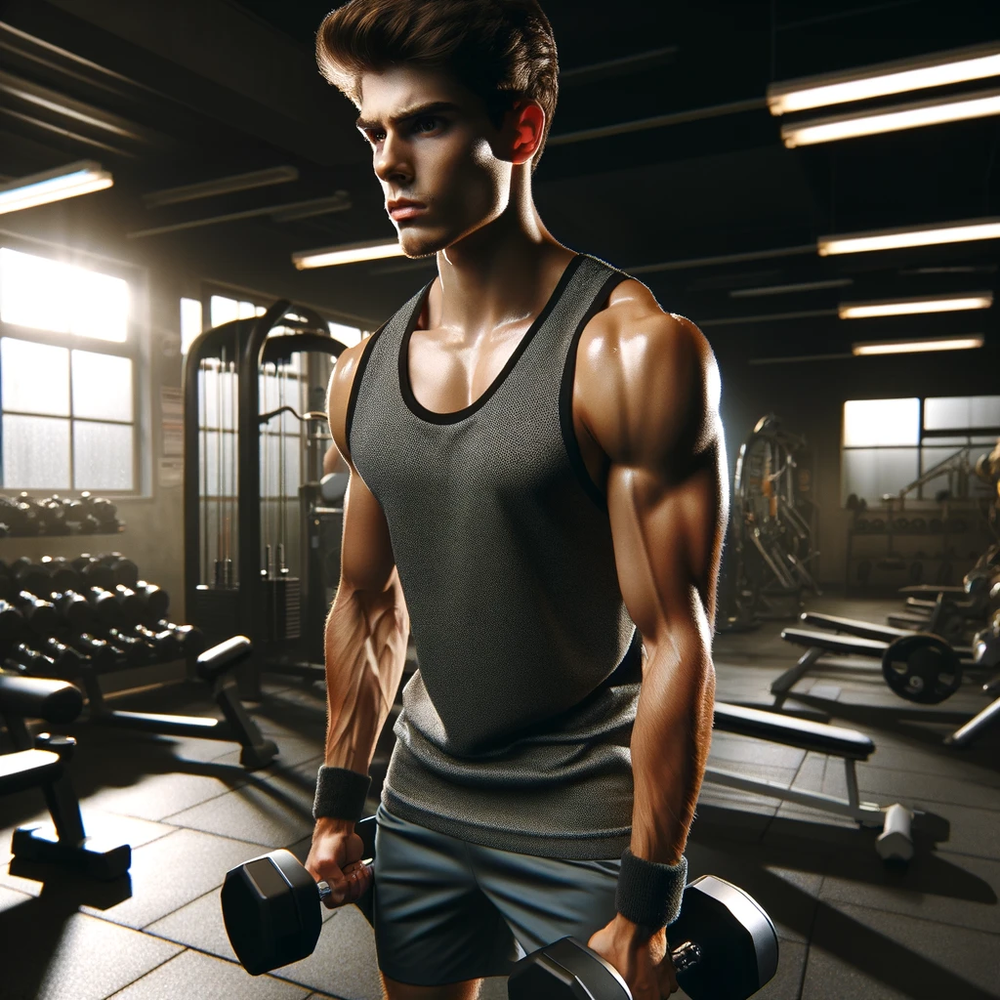
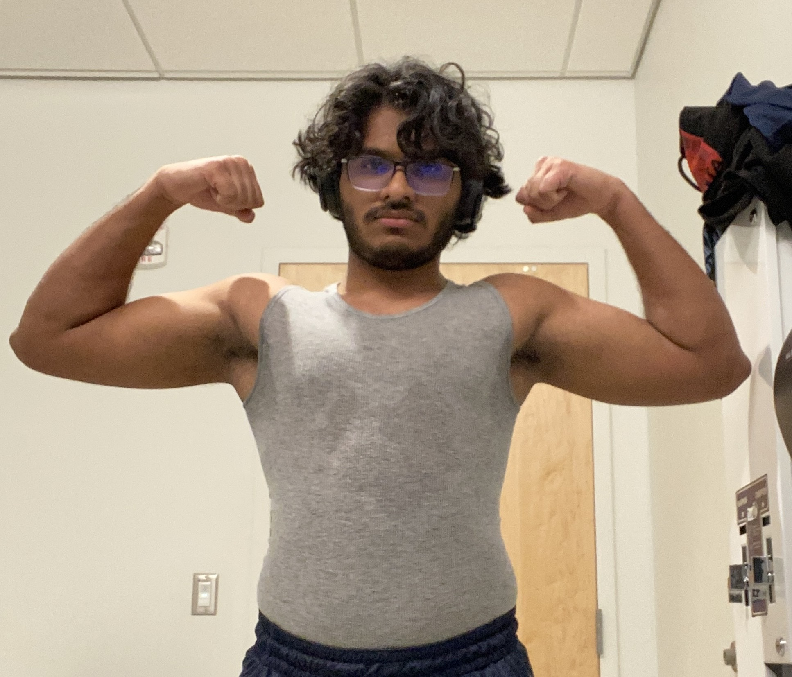
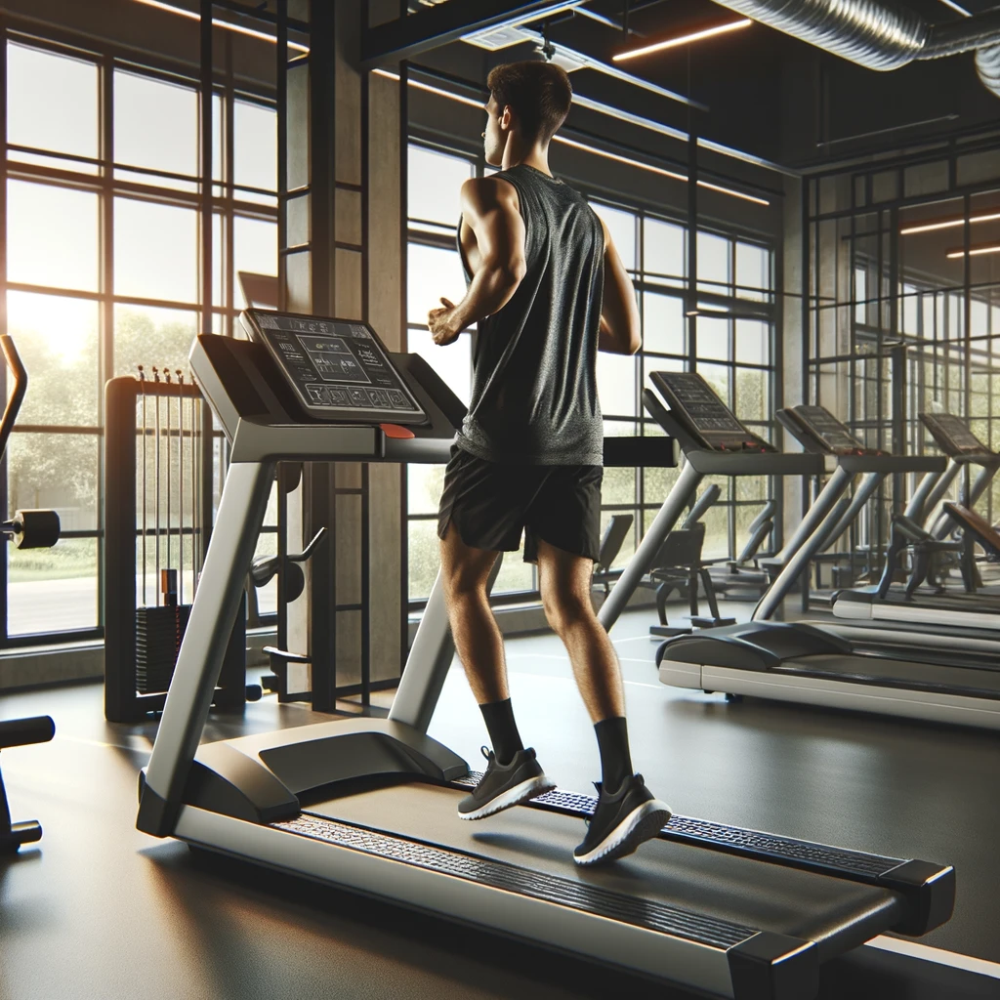
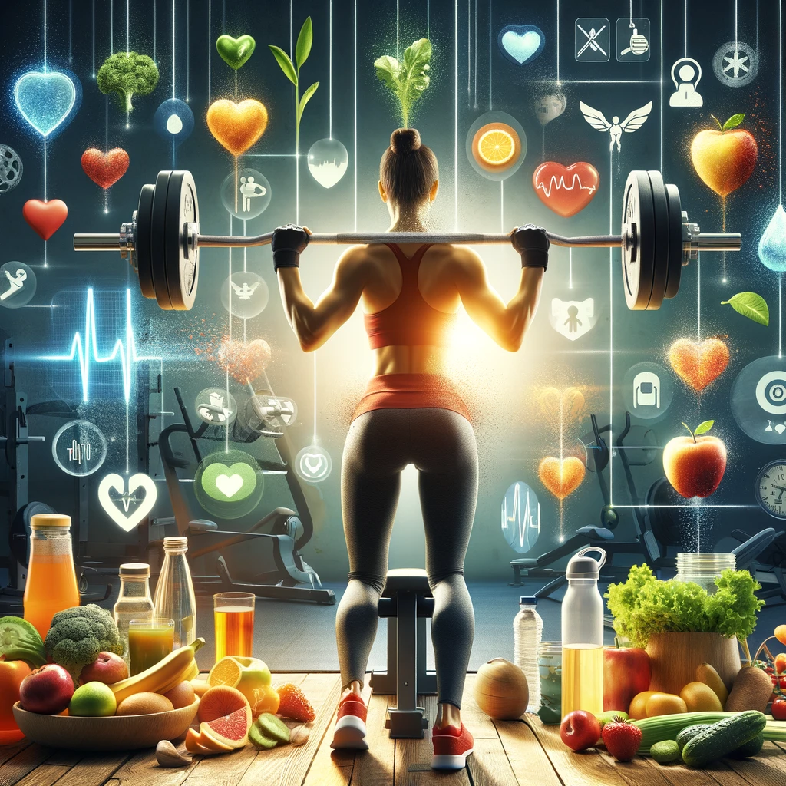

Working out, also known as physical exercise, is the practice of engaging in physical activities to improve health, fitness, and overall well-being. This can include a wide range of activities such as weightlifting, running, yoga, and more. The goal is to strengthen the body, increase endurance, enhance flexibility, and promote mental health. Regular workouts are essential for maintaining a balanced lifestyle and can help prevent various health issues while also improving mood and energy levels. Whether you're a beginner or a seasoned athlete, incorporating exercise into your daily routine is a key component of a healthy lifestyle.
I dedicate myself to regular exercise and bodybuilding, with the goal of sculpting a better physique that embodies both aesthetics and strength. My routine is a balanced mix of resistance training, cardio workouts, and a nutritional plan tailored to fuel my body's needs. This disciplined approach allows me to enhance muscle definition, reduce body fat, and improve my overall physical performance. Through this journey, I've not only transformed my body into a stronger, more resilient version of itself but have also gained confidence and a sense of mental well-being. My commitment to fitness is a testament to the power of persistence, discipline, and my personal desire to achieve the best physical version of myself.

Ai image of a guy working out
Who am I?
My name is Kevin Manoj, I am a Sophmore at the University of North Carolina at Charlotte studying Computer Science with a Concentration of Cyber Security. I am 20 years old, 180 pounds and 5'9. My max squat is 140 pounds, my max bench is 110 pounds, and I have yet to actually do a deadlift.
I have had a weird history with working out, I started the summer between my senior year and freshman year at college at a Planet Fitness. The, when I arrived here at UNCC, I went here and there but nothing commited. It was only this semester where I realized I needed to take my health seriously and this included eating better and more working out.

Me :D
When do I work out?
I work out 3 times a week; usually Monday, Wednesday, and Friday. I tend to work out around 8:30pm to 9:30pm-10pm. I try and do some cardio on the days I dont work out (unless I just hit legday) such as the treadmill, stairmaster, or the bike.
During the summers, I will try and work out for 5 days

Ai image of a treadmill
How do I work out?
I do a 3 day split where I hit Legs, Chest and biceps, and Back and Shoulders
Below I have A table that shows what I hit each day at the Gym:
Day
Exercise
Sets x Reps
Monday
Squat
3 x 6-7
Leg Extension
3 x 6-7
Leg Curl
3 x 6-7
Wednesday
Bench Press
3 x 6-7
Upper Chest Press
3 x 6-7
Pec Fly
3 x 6-7
Bicep Curl
3 x 6-7
Friday
Low Row
3 x 6-7
Assisted Pullups
3 x 6-7
Military Press
3 x 6-7
Why do I work out?
I come from a long line of heart problems, I don't want to have to beocme dependant on medications, treatments, and the sort. I want to be able to reach 40 and not have to worry that my health is going down the gutter
Also with how America has a high rate of obesity, coupled with the horrible things in our food, this is one of the ways I can fight back

The Combo of Health and Working Out
Ai Prompts
I am making a website about Working out, give me a quick paragraph to explain what Working Out is.
I do regular exercise and body building to make a better physique, make a small paragraph about that
Make an image of a guy working out
Create an image represnting working out and health
How do I make a document element to call all my buttons?
How do I make an eventlistener for each of my buttons
Give a brief overview and history of the UREC at UNCC
Make an image of someone on a treadmil
Where do I work out?
Below I have attached an image of the UREC (University Recreation Center) where I currently work out:
UREC offers a wide array of fitness and recreation spaces spread across multiple levels, aimed at meeting the diverse needs of Niner Nation. From individual exercise areas to group fitness spaces, the facility is intended to support personal health, which is considered essential for academic success and skill development. The construction of UREC was part of Chancellor Dubois's efforts during his 15-year tenure to expand the university's facilities, with the project being part of the largest facility construction and renovation program in UNC Charlotte's history.